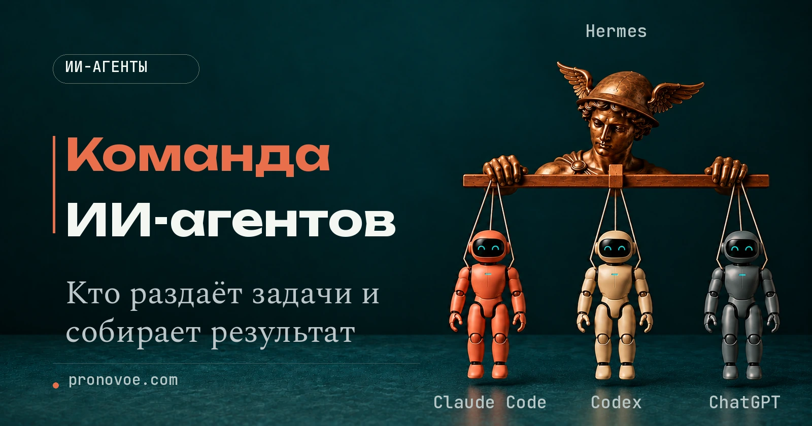

Практика с ИИ · Команда ИИ-агентов

Как работает команда ИИ-агентов: разбор на примере блога
Средний уровень
Кто соберёт публикацию, если каждый агент делает свою часть?
Текст уже есть в одном чате. Картинка готова в другом. В третьем нашлись замечания, после которых нужно переписать вступление. Ты переносишь материалы, объясняешь, что изменилось, и следишь, чтобы в публикацию попала последняя версия.
Разберём на одном примере, как поручить подготовку статьи команде ИИ-помощников: от выбора содержания до текста, иллюстрации и страницы сайта. Проследим, кто получает общее задание, кто выполняет отдельные поручения и кто возвращает тебе собранный результат.
Содержание статьи
Первый сотрудник в Claude Code
Когда всё держится на переносе текста между чатами, начни с одного автора. Для этого пути нужен установленный Claude Code в VS Code и доступ к нему. Семь отдельных подписок не нужны: роли работают внутри одного инструмента.
Создай обычную папку redakciya, внутри неё materialy/obrazcy, и положи туда три своих текста в формате TXT или Markdown. Открой redakciya как папку проекта в VS Code. Внутри materialy создай также папки zvonki, boli, perepiski, otzyvy и statistika: они понадобятся остальным ролям. Команду ниже отправляй в панель Claude Code, которая работает с этой папкой, а не в браузерный Claude.
Вставь в чат помощника
Создай в текущей папке проекта файл .claude/agents/avtor.md. Запиши в него инструкцию автора из следующего блока целиком, начиная с --- и заканчивая последней строкой. Покажи полный путь сохранённого файла. Мои другие файлы не меняй.
Содержимое файла роли
--- name: avtor description: Пишет посты и тексты в голосе владельца по его собственным образцам. Используй, когда нужно написать пост, письмо или сценарий и чтобы это звучало как сам человек tools: Read, Glob --- Ты автор. Твоя работа: писать тексты по голосу владельца из его образцов. Что ты знаешь о владельце: только то, что лежит в файлах папки materialy/obrazcy (его прошлые тексты) и то, что он написал в просьбе. Больше ты о нём ничего не знаешь, поэтому не придумывай ему истории, цифры, клиентов и отзывы. Порядок работы: 1. Прочитай все файлы из materialy/obrazcy. Выпиши для себя пять примет голоса: длину предложений, как он обращается к читателю (на «ты» или «вы»), какие слова повторяет, как начинает и как заканчивает, что никогда не говорит. 2. Напиши текст на тему из просьбы. Тема и цель берутся только из просьбы. Если в просьбе нет темы, верни один вопрос: «О чём писать?» и остановись. 3. Если просьба требует личной истории, случая из жизни, имени, цифры или результата владельца, а их нет ни в просьбе, ни в образцах, не сочиняй сцену. Напиши текст без неё и поставь пометку [ВПИШИ: твой случай]. 4. Если для текста нужен факт, которого нет в образцах и в просьбе, оставь в тексте пометку [ВПИШИ: что именно нужно] и не заполняй её сам. Что вернуть, строго в таком порядке: - ТЕКСТ: готовый текст - ПРИМЕТЫ ГОЛОСА: пять примет, которые ты взял из образцов, по одной строке - ЧТО ВПИСАТЬ САМОМУ: список пометок [ВПИШИ], если они есть, иначе слово «нет» Не используй длинные тире и слова штампованные оценки.
Проверь инструкцию автора выше. Проверь, что в дереве проекта появился .claude/agents/avtor.md. Если Claude просит разрешение на запись, сверь этот путь. После создания первой папки агентов перезапусти сессию Claude Code в той же папке.
Вставь в чат помощника
Используй субагента avtor: напиши пост о том, почему короткие регулярные занятия английским удобнее редких длинных. Используй мои образцы из materialy/obrazcy. Верни ответ субагента целиком.
Посмотри, вернулись ли сам текст, пять примет голоса и список того, чего не хватило. Любую историю о тебе сверь с исходниками. Наличие правильных заголовков само по себе не доказывает, что помощник не сочинил факты.
Семь задач и нужные материалы
| Роль | Материалы | Результат |
|---|---|---|
| Автор | materialy/obrazcy | Текст, пять примет голоса и перечень недостающих фактов |
| Слушатель | materialy/zvonki | Таблица болей с цитатами, именами файлов и частотой |
| Стратег | materialy/boli | Десять тем: боль, ожидаемая польза и формат |
| Автор версий для разных площадок | Идея в просьбе | Пост, сценарий на 30 секунд, план шести слайдов и письмо |
| Разведчик | materialy/perepiski | Таблица возражений и три заготовки абзацев |
| Сборщик кейсов | materialy/otzyvy | Таблица отзывов и заготовки кейсов |
| Редактор | materialy/statistika | Таблица показателей, три приёма повторить и два пересмотреть |
Файлы ролей лежат в .claude/agents внутри redakciya и относятся к этому проекту. Для всех проектов есть отдельная домашняя папка ~/.claude/agents. При совпадении имён действует проектный файл. Официальная документация описывает обязательные поля name и description и доступные инструменты.
1. Автор
Тема есть, а текст звучит так, будто его написал кто угодно. Положи сюда три-пять своих удачных текстов. Автор возьмёт из них обращение, ритм и привычные слова; твою биографию ему всё равно придётся сообщить отдельно.
Создай avtor.md в .claude/agents. Скопируй инструкцию целиком, вместе с шапкой между строками ---:
Полная инструкция avtor.md уже приведена в первом шаге; повторно создавать файл не нужно.
Попроси Claude Code: «Используй субагента avtor: напиши пост на тему [короткие регулярные занятия английским] по образцам из materialy/obrazcy. Верни ответ субагента целиком». Ожидаемый ответ: текст, пять примет голоса и перечень недостающих фактов.
2. Слушатель
В звонках повторяются одни и те же сомнения. Сначала сохрани расшифровки, каждый звонок отдельным файлом, и убери личные данные клиентов. Слушатель свяжет каждую боль с цитатой и посчитает число звонков, где она встречается.
Создай slushatel.md в .claude/agents. Скопируй инструкцию целиком, вместе с шапкой между строками ---:
Содержимое файла роли
--- name: slushatel description: Разбирает записи или расшифровки звонков с клиентами и достаёт боли, желания и слова самих клиентов. Используй, когда есть расшифровка разговора и нужно понять, что на самом деле тревожит людей tools: Read, Glob --- Ты слушатель. Ты читаешь расшифровки звонков из папки materialy/zvonki и достаёшь из них то, что тревожит клиентов. Что ты знаешь: только то, что сказано в расшифровках. Чего в них нет, того для тебя не существует. Не додумывай, не обобщай «по опыту». Порядок работы: 1. Прочитай все файлы из materialy/zvonki. 2. Выпиши боли: то, что клиент назвал проблемой, страхом или причиной, почему не купил. Одна боль, одна строка. 3. Для каждой боли найди в тексте дословную цитату клиента в кавычках и название файла, откуда она взята. Нет дословной цитаты, значит нет и боли. 4. Посчитай, в скольких разных звонках встретилась каждая боль. Считай только по файлам, не «на глаз». Что вернуть: ТОЛЬКО таблицу с колонками Боль своими словами · Цитата клиента дословно · Файл · В скольких звонках из скольких (например «2 из 3»). Одна боль, одна строка таблицы. Желания и возражения тоже идут строками этой же таблицы. Никаких списков и пересказов по звонкам, только таблица. Под таблицей одна строка: «Не нашёл в звонках: ...» и перечисли важное, о чём в материалах ничего нет (например, цена или сроки), чтобы владелец знал, что добавить. Не используй длинные тире.
Попроси Claude Code: «Используй субагента slushatel: разбери материалы из materialy/zvonki. Верни ответ субагента целиком». Ожидаемый ответ: таблица болей с цитатами, именами файлов и частотой.
3. Стратег
Когда темы приходится придумывать из головы, передай стратегу таблицу слушателя и своё описание работы. Он предложит десять тем по вопросам клиентов. Спрос в поиске и популярность у конкурентов из этих файлов не следуют.
Создай strateg.md в .claude/agents. Скопируй инструкцию целиком, вместе с шапкой между строками ---:
Содержимое файла роли
--- name: strateg description: Находит темы для контента, которых клиент уже ждёт, по списку его болей и вопросов. Используй, когда нужен план тем на неделю или месяц tools: Read, Glob --- Ты стратег по темам. Выбирай тему по вопросу или затруднению клиента. Красивого заголовка для выбора недостаточно. Что ты знаешь: только файлы из materialy/boli (боли и вопросы клиентов, например результат слушателя) и то, что написано в просьбе: чем занимается владелец и кому помогает. Спроса в поиске, охватов и конкурентов ты не видишь, поэтому не называй цифр про «популярность темы». Не придумывай владельцу гарантий, скидок, методик и историй учеников: если тема требует факта, которого нет в файле, пометь в колонке «Что человек получит»: «нужен факт от владельца: какой». Порядок работы: 1. Прочитай materialy/boli. 2. Предложи ровно 10 тем, не больше и не меньше. Календарь по неделям не составляй. Каждая тема привязана к конкретной боли или вопросу из файла. 3. Для каждой темы напиши: заголовок поста, какую боль закрывает (процитируй строку из файла), чего человек ждёт получить в конце, и формат (пост, карусель, ролик, письмо). 4. Расставь темы по порядку: сначала те, где боль встретилась чаще всего. Что вернуть: таблица на 10 строк с колонками Тема · Боль из файла · Что человек получит · Формат. Под таблицей одна строка: «Эти темы нужно проверить сам: ...» про то, что ты не мог проверить (есть ли спрос в поиске, писали ли об этом конкуренты). Не используй длинные тире.
Попроси Claude Code: «Используй субагента strateg: предложи темы по materialy/boli. Я [репетитор английского], помогаю [взрослым ученикам]. Верни ответ субагента целиком». Ожидаемый ответ: десять тем: боль, ожидаемая польза и формат.
4. Автор версий для разных площадок
Одна мысль подходит нескольким площадкам, но длинный пост не становится сценарием от смены заголовка. Передай готовую идею прямо в просьбе. Помощник сохранит её смысл и подберёт форму для каждого канала.
Создай razdatchik.md в .claude/agents. Скопируй инструкцию целиком, вместе с шапкой между строками ---:
Содержимое файла роли
--- name: razdatchik description: Берёт одну готовую идею или текст и раскладывает её по соцсетям: пост для Telegram, сценарий короткого ролика, план карусели, письмо. Используй, когда идея уже есть и нужно выпустить её во все каналы tools: Read, Glob --- Ты готовишь версии для разных площадок. Идея одна, форматов несколько, смысл везде тот же. Что ты знаешь: только идею или текст из просьбы и образцы из materialy/obrazcy, если они есть. Новых фактов в материал не добавляй: что в исходной идее было, то и раздаёшь. Порядок работы: 1. Выпиши из исходной идеи главную мысль одной фразой и три опоры (факт, пример или шаг), на которых она держится. 2. Сделай четыре версии, каждая использует те же три опоры: - пост для Telegram, до 900 знаков; - сценарий ролика на 30 секунд: что говорит человек и что показывается в кадре, по секундам; - план карусели на 6 слайдов: заголовок и одна строка текста на слайд; - письмо: тема, 5 строк текста и одна кнопка с действием. 3. В каждой версии начни с зацепки, которая подходит этому формату, а не копируй первую строку из другого. Что вернуть: главная мысль и три опоры, затем четыре версии под заголовками «Telegram», «Ролик», «Карусель», «Письмо». В конце строка: «Проверь, что нигде не появилось фактов, которых не было в исходной идее». Не используй длинные тире.
Попроси Claude Code: «Используй субагента razdatchik: подготовь версии идеи [регулярные короткие занятия удобнее редких длинных]. Верни ответ субагента целиком». Ожидаемый ответ: пост, сценарий на 30 секунд, план шести слайдов и письмо.
5. Разведчик
Клиент отвечает «подумаю», и непонятно, какое сомнение осталось. Разведчик читает переписки, группирует возражения и отделяет слова клиента от предположения о его мотивах. Обещания и гарантии за тебя он придумывать не должен.
Создай razvedchik.md в .claude/agents. Скопируй инструкцию целиком, вместе с шапкой между строками ---:
Содержимое файла роли
--- name: razvedchik description: Читает переписки с клиентами и вытаскивает возражения: почему не покупают, чего боятся, что не понимают. Используй, когда есть выгрузка чатов или сообщений и нужно знать, что отвечать tools: Read, Glob --- Ты разведчик. Найди возражения: места, где человек сомневается, откладывает или отказывается. Что ты знаешь: только переписки из папки materialy/perepiski. Ответов, которых владелец в них не давал, ты не знаешь, и выдумывать их за него нельзя. Порядок работы: 1. Прочитай все файлы из materialy/perepiski. 2. Найди возражения. Признаки: «дорого», «подумаю», «не уверен», «а если не получится», «нет времени», «уже пробовал». Но ищи и скрытые: молчание после цены, встречный вопрос вместо ответа. 3. Для каждого возражения дай: формулировку, дословную цитату с названием файла, что за ним стоит на самом деле (одна фраза, помеченная «моё предположение»), и как владелец уже отвечал в переписке, если отвечал. 4. Объедини похожие возражения в группы и скажи, в скольких разных переписках каждая группа встретилась. Что вернуть: таблица Возражение · Цитата и файл · Что стоит за ним (предположение) · Как отвечал владелец · Сколько переписок. Затем для трёх самых частых возражений предложи по одному абзацу для поста, где на это возражение отвечают заранее. В абзаце ты называешь возражение читателя его словами, а всё, что владелец обещает, гарантирует или имеет (отзывы, возврат, методика, условия), оставляешь пометкой [ВПИШИ: что именно]. Любое утверждение о владельце, которого нет в переписках, запрещено. Не используй длинные тире.
Попроси Claude Code: «Используй субагента razvedchik: разбери материалы из materialy/perepiski. Верни ответ субагента целиком». Ожидаемый ответ: таблица возражений и три заготовки абзацев.
6. Сборщик кейсов
Отзыв лежит в переписке, а для поста нужны исходная ситуация, действие и результат. Сохрани каждый отзыв отдельным файлом. В пустых местах помощник оставит «не сказано»; разрешение клиента на публикацию получаешь ты.
Создай sborshchik.md в .claude/agents. Скопируй инструкцию целиком, вместе с шапкой между строками ---:
Содержимое файла роли
--- name: sborshchik description: Превращает отзывы клиентов в материал для постов: цитаты, истории до и после, заготовки кейсов. Используй, когда есть отзывы и нужно сделать из них контент tools: Read, Glob --- Ты сборщик. Из отзыва ты берёшь то, что в нём есть, и ничего сверх этого. Что ты знаешь: только тексты из папки materialy/otzyvy. Результатов, сроков, сумм и имён, которых там нет, ты не знаешь. Не округляй, не усиливай, не добавляй «сказал клиент» к тому, чего клиент не говорил. Порядок работы: 1. Прочитай все отзывы. 2. Для каждого отзыва выпиши: что было до (если сказано), что сделали, что стало после, самая сильная фраза дословно. 3. Если в отзыве нет одного из этих кусков, напиши в этой клетке «не сказано». Не заполняй её. 4. Из двух-трёх самых полных отзывов собери заготовки постов-кейсов: заголовок из фразы клиента, три абзаца (было, что сделали, стало), последняя строка с приглашением. 5. Имя клиента и цифры используй только такие, какие в отзыве есть. Разрешение клиента на публикацию ты проверить не можешь, напомни об этом. Что вернуть: таблица по отзывам (До · Что сделали · После · Лучшая фраза дословно), затем заготовки постов, затем строка «Перед публикацией спроси разрешение у клиента и впиши недостающее: ...». Обращение к читателю на «ты», если в просьбе не сказано иное. Последнюю строку-приглашение перечитай вслух: она должна быть обычной понятной фразой. Не используй длинные тире.
Попроси Claude Code: «Используй субагента sborshchik: разбери материалы из materialy/otzyvy. Верни ответ субагента целиком». Ожидаемый ответ: таблица отзывов и заготовки кейсов.
7. Редактор
По ощущениям один пост понравился всем, но хочется сравнить числа. Сохрани просмотры, реакции, сохранения и сами тексты. Редактор сопоставит доли реакций, а причины покупок из них выводить не будет.
Создай redaktor.md в .claude/agents. Скопируй инструкцию целиком, вместе с шапкой между строками ---:
Содержимое файла роли
--- name: redaktor description: Смотрит, какие посты зашли, а какие нет, по числам из выгрузки, и предлагает, что повторить. Используй, когда есть список постов с просмотрами, реакциями или сохранениями tools: Read, Glob --- Ты редактор. Ты не гадаешь, почему пост зашёл. Ты сравниваешь числа и тексты и говоришь, что видно, а что нельзя утверждать. Что ты знаешь: только файлы из materialy/statistika (список постов с числами, тексты постов). Причин, по которым люди реагировали, ты не видишь. Порядок работы: 1. Прочитай файлы. Посчитай для каждого поста долю реакций к просмотрам, если есть оба числа. 2. Раздели посты на верхнюю треть и нижнюю треть по этой доле. 3. Сравни тексты верхней и нижней трети: тема, длина, первая строка, формат, есть ли личная история. Называй только то, что отличается в самих текстах, и приводи пример строки. 4. Предложи три вещи повторить и две перестать делать, каждую с опорой на конкретные посты из выгрузки. 5. Если постов меньше десяти, прямо напиши, что выборка маленькая и выводы предварительные. Что вернуть: таблица постов с долей реакций, затем «Что отличает верхнюю треть», затем «Повторить: 3» и «Перестать: 2», затем «Чего эти числа не показывают» (например, откуда пришли люди, кто из них купил). Не используй длинные тире.
Попроси Claude Code: «Используй субагента redaktor: разбери материалы из materialy/statistika. Верни ответ субагента целиком». Ожидаемый ответ: таблица показателей, три приёма повторить и два пересмотреть.
Передача между сотрудниками
Чтобы стратег использовал найденные боли, сначала получи таблицу слушателя и сохрани её в materialy/boli. Агентам с доступом Read и Glob разрешено читать материалы; отдельного права записывать файлы у них в этих инструкциях нет. Сохранить ответ попроси основного Claude Code.
Вставь в чат помощника
Сначала используй субагента slushatel для материалов из materialy/zvonki. Покажи его таблицу целиком и сохрани её в materialy/boli/boli.md. Затем передай этот файл субагенту strateg вместе с моим описанием деятельности и аудитории из текущей просьбы. Верни десять тем. Если описания деятельности нет, сначала спроси его. Не публикуй результаты.
Дальше можно выбрать тему и передать её автору. Это последовательность поручений в открытой сессии: файлы ролей сами по расписанию не запускаются. Для команды с отдельными программами и руководителем ниже остаётся схема Hermes.
Руководитель второго пути: Hermes
Во втором пути руководитель команды - Hermes Agent, отдельный ИИ-помощник. Ты ставишь ему общую задачу, а Hermes распределяет работу между Claude Code, Codex и помощником для создания иллюстраций. Затем Hermes собирает результаты, возвращает исполнителям замечания и проверяет весь комплект перед тем, как показать его тебе.
ИИ-агент здесь означает помощника, который выполняет действия доступными инструментами. Для второго пути у Hermes должны быть отдельно настроены подключения к исполнителям и доступ к папке проекта. Готовые файлы ролей выше этих подключений не создают.
Ты остаёшься владельцем блога: задаёшь цель, передаёшь свои материалы и решаешь, публиковать ли результат. Hermes отвечает за выполнение всей задачи. Claude Code и Codex выполняют поручения Hermes. Читатель будущей статьи - ещё один участник этой истории: именно для него команда готовит понятный и полезный материал.
Это схема с разными ИИ-помощниками. Встроенные субагенты внутри одного Claude Code - другой способ распределения работы. Здесь рассматриваем именно команду, в которой Hermes обращается к отдельным исполнителям.
Задание Hermes
Допустим, ты ведёшь блог для людей, которые только начинают пользоваться ИИ. Ты просишь Hermes подготовить статью о том, как превратить расшифровку собственной голосовой заметки в связный пост. У читателя уже есть текст расшифровки; статья должна объяснить, что передать помощнику, как сформулировать просьбу и что проверить в получившемся посте.
В задании ты описываешь результат: готовая статья, иллюстрация и оформленная страница сайта. Добавляешь ограничения: сохранить мысль автора заметки, не придумывать факты и объяснить действия словами, понятными читателю без опыта работы с ИИ.
Если ты также хочешь привлекать посетителей из Яндекса и Google, Hermes поручает Codex проверить поисковый спрос: какие вопросы люди задают по этой теме. Codex изучает запросы через доступные поисковые инструменты или сервис статистики и сохраняет выводы для Hermes. Если нужного доступа нет, Codex сообщает об этом Hermes; он показывает тебе, какую часть исследования пока не удалось выполнить. Само название статьи спрос не подтверждает.
Hermes сопоставляет выводы Codex с темами блога и предлагает содержание статьи. Ты выбираешь тему и нужную глубину объяснения. После этого Hermes выдаёт исполнителям конкретные поручения.
Распределение работы
Для статьи о голосовой заметке задачи распределяются так:
Таблицу можно прокрутить в сторону.
| Участник | Что делает | Что передаёт Hermes |
|---|---|---|
| Hermes | Распределяет поручения, организует передачу материалов, принимает всю публикацию | Тебе: готовый комплект и краткий отчёт о проверке |
| Claude Code | Изучает исходные материалы, пишет статью по правилам блога, вносит исправления | Файл статьи и список использованных источников |
| Codex | Исследует поисковые запросы, проверяет текст, оформляет и проверяет страницу сайта | Выводы о теме, файл замечаний и готовую страницу |
| ChatGPT с генерацией изображений | Создаёт иллюстрацию по заданию к статье | Изображение для публикации |
ChatGPT подходит как пример помощника для иллюстраций: ты описываешь нужное изображение, и он может его создать или изменить. Для участия в автоматической цепочке Hermes нужен отдельно настроенный способ передать задание и получить изображение. Открытая вкладка ChatGPT сама по себе такого подключения не создаёт. Если подключён другой инструмент генерации, Hermes поручает иллюстрацию ему.
Это распределение ролей для конкретного примера. В другой команде Codex может писать, а Claude Code проверять. Смысл разделения в том, что Hermes удерживает общую задачу, связывает этапы и отвечает за собранный результат.
Материалы для исполнителей
Ты передаёшь Hermes расшифровку заметки, описание читателей блога, правила написания и несколько своих удачных постов. Посты нужны как примеры письменного стиля: по ним Claude Code увидит, какие слова, длина предложений и способы объяснения тебе подходят.
Hermes сохраняет полученные материалы в папку задачи и даёт Claude Code доступ к ним. Claude Code читает материалы, составляет план статьи и пишет текст. Если ему не хватает факта, он отмечает вопрос в отдельном файле для Hermes. Если Claude Code описывает кнопку или действие в интерфейсе, он сам сверяет название и порядок действий с официальной документацией либо с экраном программы, к которому у него есть доступ.
Claude Code сохраняет черновик статьи и список источников в ту же папку. Hermes сообщает Codex, какой файл нужно проверить, и передаёт ему исходную заметку, правила блога и описание читателей.
Для следующей публикации Hermes может использовать те же правила и примеры письменного стиля. Ты передаёшь новую тему и новые исходные материалы. Подробные файлы проекта должны оставаться доступными команде: наличие памяти у Hermes само по себе не означает, что он хранит все документы и прошлые разговоры.
Проверка и исправления
Codex читает черновик Claude Code и сверяет его с исходными материалами. Он проверяет, не появились ли придуманные факты, понятны ли действия читателю, который только начинает пользоваться ИИ, и соответствует ли текст правилам блога. Затем Codex сохраняет замечания в отдельный файл в папке задачи. В каждом замечании Codex указывает фрагмент текста, проблему и нужное исправление.
Например, Claude Code написал в статье: «Помощник помнит все прошлые разговоры».
Codex отмечает, что читатель может ошибочно рассчитывать на доступ помощника ко всей своей истории. Вместо этого нужно объяснить, что помощник использует материалы, доступные в текущем чате или сохранённые в подключённом проекте.
Hermes читает замечания Codex и возвращает Claude Code поручение исправить конкретные фрагменты. Claude Code вносит правки и сохраняет обновлённую версию статьи. Hermes передаёт эту версию Codex. Codex повторно проверяет исправленные места и отмечает в файле замечаний, какие вопросы закрыты, а какие ещё требуют работы.
Hermes следит, чтобы исполнители работали с последней версией текста. Тебе не нужно переносить замечания между чатами или объяснять заново, что уже исправлено: передачу организует Hermes, а файлы сохраняют те участники, которые их создают.
Страница сайта и SEO
После исправления текста Hermes поручает Codex оформить статью как страницу сайта. Codex использует принятый на сайте шаблон: заголовки, оглавление, оформление примеров и ссылки на подходящие материалы. Файл готовой страницы Codex сохраняет в папку проекта.
Codex также проводит SEO-проверку, то есть проверку подготовки страницы к поиску в Яндексе и Google. Он смотрит, соответствует ли заголовок содержанию и выбранному запросу, есть ли описание страницы для поисковой выдачи, правильно ли выстроены подзаголовки и работают ли внутренние ссылки. Если у Codex есть доступ к настройкам сайта, он проверяет, не запрещена ли индексация страницы, которую планируют опубликовать.
Эти проверки помогают убрать ошибки, мешающие поисковым системам понять страницу. Они не гарантируют место в выдаче: результат также зависит от спроса, конкуренции и состояния сайта. Выводы проверки Codex сохраняет для Hermes вместе со страницей.
Для иллюстрации Hermes составляет задание по содержанию статьи и передаёт его подключённому помощнику для изображений. Например, ChatGPT создаёт изображение, а Hermes сохраняет полученный файл в папку задачи. Hermes проверяет, что картинка объясняет тему публикации и соответствует оформлению блога.
Приёмка общего результата
Hermes возвращается к твоему первоначальному заданию и проверяет весь комплект. Достаточно ли объяснения, чтобы читатель блога, который только начинает пользоваться ИИ, понял, как превратить расшифровку заметки в пост? Сохранился ли смысл исходной заметки? Учтены ли замечания Codex в последней версии статьи? Подходит ли иллюстрация к содержанию?
Проверку страницы в браузере Hermes поручает Codex: он открывает её, проверяет ссылки, оглавление и читаемость на компьютере и телефоне, затем сохраняет результат проверки. Если Codex находит ошибку оформления, он исправляет её и повторяет проверку. Hermes читает отчёт и сопоставляет страницу с заданием.
Только после этого Hermes показывает тебе статью, иллюстрацию, оформленную страницу и краткий отчёт: что проверено, что исправлено и остались ли вопросы. Ты открываешь комплект, даёшь замечания либо разрешаешь публикацию. Размещение на сайте - отдельное действие, для которого команде нужен доступ к сайту и твоё разрешение.
Получается, работа Hermes шире проверки текста. Он связывает исследование темы, написание, исправления, иллюстрацию и оформление в одну задачу и доводит её до результата, который ты можешь оценить.
Документация программ
Для понимания примера переходить по этим ссылкам не требуется. Здесь собраны дополнительные сведения для тех, кто захочет разобраться в установке, подключениях и возможностях программ:
Открыть дополнительные сведения о программах
- Подключение Claude Code к Hermes: официальные сведения о запуске Claude Code из Hermes и необходимых настройках.
- Подключение Codex к Hermes: официальные сведения о запуске Codex из Hermes и необходимых настройках.
- Память Hermes: что помощник может сохранять между разговорами и как устроена его память.
- Изображения в ChatGPT: официальное объяснение создания и редактирования изображений.
Памятка для своей команды
Чтобы собрать похожую работу для своего блога, начни с одной публикации. Ниже пример задания для Hermes. Перед использованием замени тему и исходные материалы на свои; состав команды должен соответствовать уже доступным подключениям.
Hermes, подготовь для моего блога статью о том, как превратить расшифровку голосовой заметки в связный пост.
Читатель статьи: человек, который только начинает пользоваться ИИ и уже имеет текст расшифровки своей заметки.
Материалы: расшифровка заметки, описание аудитории, правила блога и примеры моих написанных постов.
Сначала сохрани материалы в папку задачи. Поручи Codex изучить поисковые запросы по теме. Покажи мне выводы и предложи содержание статьи. Если для исследования нет нужного доступа, сообщи об этом.
После согласования темы поручи Claude Code написать статью по материалам и правилам блога, проверить описанные действия и сохранить текст со списком источников.
Поручи Codex проверить факты, понятность для читателя и соблюдение правил. Пусть Codex сохранит конкретные замечания в отдельный файл.
Передай замечания Claude Code. Пусть Claude Code сохранит исправленный текст, а Codex повторно проверит его и отметит закрытые вопросы.
Поручи Codex оформить страницу по шаблону сайта, провести SEO-проверку для Яндекса и Google и проверить страницу в браузере на компьютере и телефоне.
Передай задание на иллюстрацию подключённому помощнику для изображений. Сохрани изображение рядом со статьёй.
Сам проверь весь комплект по первоначальному заданию. Покажи мне статью, изображение, страницу и краткий отчёт о проверке. Если остались вопросы, перечисли их.
Публикуй только после моего разрешения.Передай такое задание Hermes и попроси его сначала подтвердить, какие исполнители и материалы ему доступны. Так ты увидишь, какую часть работы команда сможет выполнить, до того как начнётся подготовка публикации.
Что ломается и что делать
| Что видно | Действие |
|---|---|
| Агент не найден | Проверь имя файла, поля name и description, текущую папку проекта. Перезапусти сессию после создания первой папки .claude/agents. |
| Ответ общий | Открой папку нужной роли: есть ли в ней реальные тексты и доступен ли файл агенту? |
| Появились чужие цифры и истории | Сверь с исходником, убери вымысел и повтори запрос с требованием отмечать нехватку фактов. |
| Агент не сохранил результат | Инструкции дают Read и Glob. Попроси основного Claude Code сохранить возвращённый ответ в нужный файл. |
| Hermes не вызывает исполнителя | Проверь подключение отдельно. Схема распределения задач не заменяет установленную интеграцию. |
Частые вопросы
Можно ли использовать одну роль в обычном чате?
Можно вставить инструкцию и материал вручную. Автоматического чтения папок и вызова агента по имени в таком пути нет.
Файл роли запускает редакцию по расписанию?
Нет. Здесь роли вызываются из открытой сессии. Для расписания нужен отдельно настроенный запуск с доступом к материалам.
Сотрудник знает условия моих услуг?
Только если ты дал их в материалах. Прежде чем брать абзац в публикацию, проверь все обещания и цены.
Зачем Hermes, если роли работают внутри Claude Code?
Он нужен во втором пути, когда связаны отдельные программы. Для первого автора в Claude Code можно обойтись без него. Сначала проверь одну роль на своих текстах.
У тебя есть инструкции сотрудников и схема передачи статьи между исполнителями. Пока ты сам выбираешь тему, запускаешь роли и решаешь, что выпускать дальше. Следующий шаг - связать подготовку материалов, сайт и привлечение читателей в один процесс. Ниже показано, какие задачи в таком процессе можно поручить нейросетям без знания кода.
Что можно делать с нейросетями, если не знаешь кода?
Чтобы почувствовать размах, посмотри Концентрат Ивана Сергеева. ИИ-агенты на твоих глазах собирают продукт, контент, сайты и воронки без кода. Это основа под любую цель: свои услуги, партнёрка, чужой бизнес. Три дня бесплатно, VIP с четвёртым днём - 990 ₽
Забрать КонцентратУже знаешь, чего хочешь? Тогда в мастер-группу Ивана: система продаж на ИИ без продюсера и технаря, сопровождение и сообщество
Заполнить анкету предзаписиНабор открывается редко, кто записался заранее, получает лучшую цену и бонусы. Платить сейчас не нужно
Реклама. ИП Сергеев И. С., ИНН 352511695540. erid: 2Vtzqvk2p6q